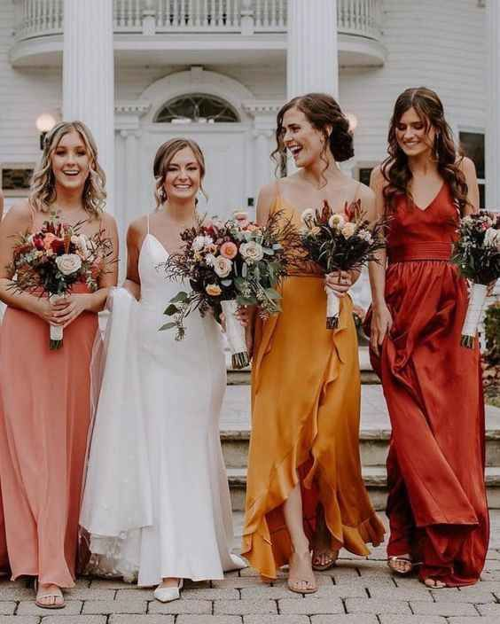
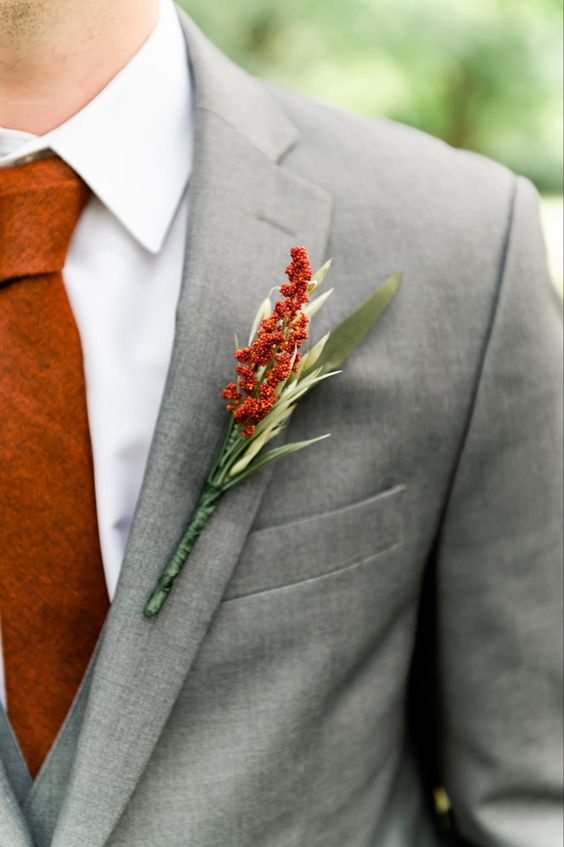

Padrinhos e Madrinhas
Queridos padrinhos e madrinhas, ficamos muito honrados por poder contar com sua presença neste momento especial! Neste manual você vai encontrar mais informações sobre o fim de semana do nosso casamento. Contamos com vocês para nos acompanhar da primeira taça de espumante até o último minuto da pista de dança.

BENÇA MADRINHA
Madrinha é aquela que testemunha, abençoa, aconselha, reza, auxilia e protege nossa união. Vocês, nossas melhores amigas e confidentes já são as madrinhas de nossas vidas, mesmo sem essa formalidade.
SEU PAPEL
Nos aguentar kk e auxiliar nesse momento tão importante;
Curtir e comentar todas nossas publicações do casamento nas redes sociais hehehehe;
Se sentir linda na festa;
Sorrir bastante;
Entrar na cerimônia acompanhada de um padrinho e sentar em um lugar privilegiado para assistir a cerimônia de pertinho;
Enxugar nossas e suas lágrimas de felicidade;
Sair da dieta (muitos doces);
Dançar muito e aproveitar a festa até o fim;
Sair da dieta (muitos doces);
Entender o quão importante é você e sua presença para nós.
BENÇA PADRINHO
Vocês são nossos padrinhos por razões diversas: primeiro por serem bons amigos, e padrinho acima de tudo é aquele que testemunha, abençoa, aconselha, reza, auxilia e protege nossa união. Os padrinhos não têm todo aquele frufru das madrinhas, é só alegria.
SEU PAPEL
Colocar um paletó com gravata (tire o pó e peça para alguém passar e engomar kkk);
Entrar na igreja acompanhado de uma madrinha "gata" e sentar em um lugar privilegiado para acompanhar a cerimônia;
Não chorar... tá bom, pode chorar;
Fingir que estão alegres de serem escolhidos como padrinhos;
Comer e beber muito durante a festa;
Saber que vocês são nossos parceiros de coração;
Não esquecer de lembrar seu próprio nome ao sair da festa KK;
Entender o quão importante é você e sua presença para nós.

Inspirações para Madrinhas...
Nesse dia tão importante, escolhemos com muito carinho essa paleta de cores cor para o seu vestido. O modelo do vestido fica a seu critério. O importante é você se sentir confortável e linda!
Padrinho para que você fique ainda mais elegante, neste dia gostaríamos que usasse uma camisa branca, calça e terno cinza. Ah, não se preocupe a flor de Lapela iremos providenciar no dia da cerimônia.
Inspiração para os padrinhos...